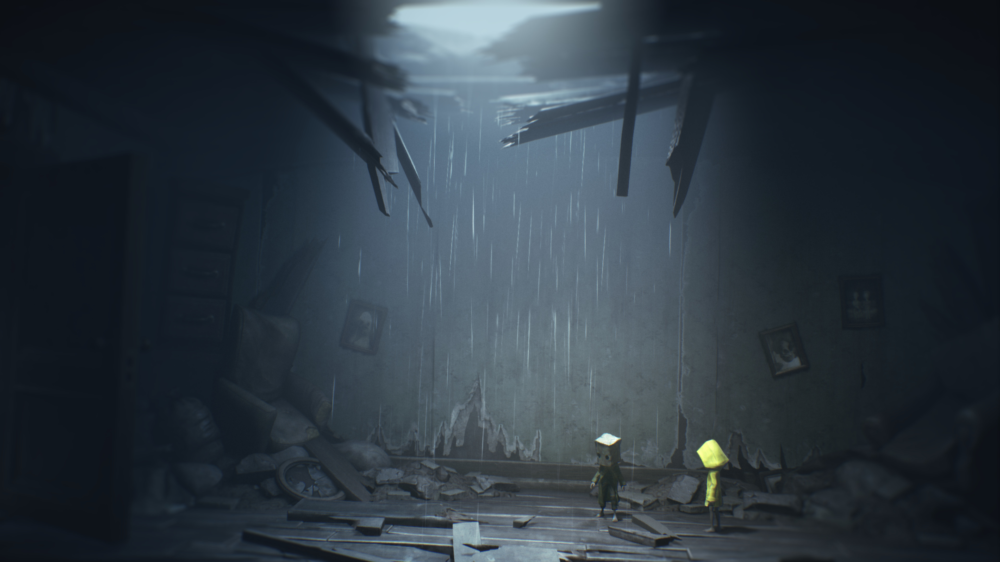

Dans le premier opus de la saga,
Little Nightmares,
les joueurs sont plongés dans l'univers sombre et déroutant de Six,
une jeune héroïne vêtue d'un imperméable jaune.
L'histoire débute alors que Six se réveille à bord du Maw,
un navire mystérieux et oppressant qui s'étend dans l'obscurité infinie de l'océan.
Dès les premiers pas,
l'atmosphère lugubre du lieu se fait ressentir,
créant une tension palpable.
Le Maw,
à première vue un simple navire,
se révèle être un dédale labyrinthique de salles tordues et de couloirs sinistres.
Ces espaces sont habités par une galerie de créatures grotesques,
chacune plus étrange et menaçante que la précédente.
Des cuistots déformés aux hôtes effrayants,
les rencontres avec ces figures obscures ne font que renforcer le sentiment d'horreur et d'isolement qui imprègne le jeu.
Six,
cherchant désespérément à échapper à cet environnement cauchemardesque,
doit naviguer à travers des énigmes retorses et éviter les dangers qui la guettent à chaque coin.
Le jeu explore brillamment les thèmes de la peur de l'inconnu et de la lutte pour la survie dans un monde étrange et hostile.
Chaque nouvelle révélation sur les origines du Maw ou sur le passé de Six ajoute une profondeur émotionnelle à l'intrigue,
tout en intensifiant le mystère qui entoure cet univers sombre.
Au fil de son périple,
Six se confronte non seulement aux horreurs physiques du Maw mais aussi à des épreuves psychologiques qui mettent à l'épreuve sa détermination et sa résilience.
Le premier opus de Little Nightmares est bien plus qu'un simple jeu d'horreur :
c'est une plongée captivante dans les recoins les plus sombres de l'imagination,
où le joueur est confronté à ses propres peurs et à la vulnérabilité de Six face à l'inconnu terrifiant qui l'entoure.
Little Nightmares II (2021)
Little Nightmares II,
le deuxième opus de la série,
dévoile une nouvelle perspective horrifique en plaçant les joueurs dans la peau de Mono,
un jeune garçon évoluant dans un monde tout aussi étrange que déformé.
Dès le début,
le joueur est immergé dans un récit captivant où l'inconnu règne en maître.
Mono,
le protagoniste de cette aventure,
se trouve aux prises avec des environnements qui défient toute logique et des énigmes complexes qui mettront à l'épreuve son ingéniosité.
Alors que le joueur explore ces lieux étranges,
la collaboration avec Six,
le personnage central du premier opus,
devient essentielle pour surmonter les nouveaux défis qui se dressent sur leur chemin.
Cette alliance ajoute une dimension stratégique au jeu,
renforçant le lien entre les deux protagonistes et offrant une dynamique de jeu unique.
Les horreurs rencontrées dans Little Nightmares II sont à la fois familières et nouvelles,
chaque lieu présentant son propre lot de mystères.
Des écoles désertées aux forêts obscures,
l'histoire se déploie dans des décors variés qui ajoutent une richesse visuelle et narrative à l'intrigue globale.
Chaque environnement est soigneusement conçu pour susciter une atmosphère particulière,
renforçant l'immersion du joueur dans ce monde cauchemardesque.
L'intrigue elle-même prend des tournures inattendues,
laissant les joueurs découvrir les secrets cachés derrière chaque coin sombre.
Les énigmes qui ponctuent l'aventure exigent réflexion et perspicacité,
créant une expérience de jeu engageante et stimulante.
Little Nightmares II réussit à étendre l'univers établi par son prédécesseur tout en offrant une expérience unique qui maintient le mystère et l'horreur au cœur de l'expérience.
En conclusion,
Little Nightmares II pousse les frontières de l'horreur et du puzzle en offrant aux joueurs une plongée immersive dans un monde déformé et énigmatique.
L'alliance entre Mono et Six,
les environnements variés et la narration intrigante contribuent à faire de cette suite une expérience inoubliable qui continue d'explorer les thèmes de la peur de l'inconnu et de la lutte pour la survie dans un univers étrange et hostile.
Symphonie de l'Horreur
Ce qui caractérise de manière incontestable la saga Little Nightmares est son atmosphère singulière d'horreur atmosphérique,
une fusion magistrale de graphismes éthérés et d'une musique immersive.
Ces éléments se conjuguent pour créer une expérience véritablement cinématographique,
plongeant les joueurs dans un tourbillon d'angoisse et de fascination.
Les graphismes éthérés de la saga jouent un rôle essentiel dans la construction de cet univers étrange et oppressant.
Chaque détail visuel,
des décors lugubres aux personnages déformés,
contribue à instaurer une esthétique unique,
évoquant une beauté sombre et captivante.
Les visuels ne se contentent pas de servir l'intrigue,
mais deviennent un élément narratif à part entière,
stimulant l'imaginaire des joueurs tout en renforçant l'atmosphère oppressante qui caractérise Little Nightmares.
La bande sonore,
méticuleusement orchestrée,
constitue un pilier central de l'expérience de jeu.
Chaque note,
chaque crescendo musical est soigneusement choisi pour amplifier les émotions ressenties par le joueur.
Les mélodies inquiétantes qui accompagnent les moments de tension et les sons ambiants qui enveloppent l'environnement ajoutent une dimension sensorielle cruciale.
En intégrant ces éléments sonores de manière immersive,
la saga réussit à transcender la simple interaction visuelle pour plonger les joueurs dans un monde sonore aussi captivant que terrifiant.
Lorsque les graphismes et la musique se fusionnent,
ils créent une synergie qui va au-delà de l'esthétique pure,
formant une expérience holistique.
Cette immersion totale dans l'univers de Little Nightmares génère une tension palpable,
stimulant les sens des joueurs et intensifiant l'impact émotionnel du jeu.
Ainsi,
la saga parvient à élever le jeu vidéo au rang d'œuvre artistique,
capturant l'essence même de l'horreur atmosphérique et transportant les joueurs dans un cauchemar captivant et mémorable.

Énigmes et Émerveillement
La saga Little Nightmares s'impose comme une expérience inoubliable qui transcende les limites du genre du jeu vidéo.
Portée par des personnages mémorables,
des environnements captivants et une bande sonore immersive,
la série a su conquérir le cœur des amateurs d'horreur et de jeux de réflexion.
Les personnages de Little Nightmares sont bien plus que de simples protagonistes ;
ils sont des énigmes vivantes,
évoquant des émotions et des interrogations chez les joueurs.
Six et Mono,
avec leurs apparences distinctives et leurs histoires mystérieuses,
deviennent des guides à travers ce cauchemar visuel,
ajoutant une couche émotionnelle à l'expérience de jeu.
Leur vulnérabilité face aux horreurs qui les entourent crée un lien puissant entre les joueurs et l'intrigue,
faisant de chaque moment une exploration poignante de l'humain confronté à l'inconnu.
Les environnements,
tout aussi essentiels,
sont des œuvres d'art interactives.
Chaque cadre,
qu'il s'agisse du sinistre navire le Maw ou des territoires déformés explorés par Mono et Six,
est méticuleusement conçu pour susciter des émotions distinctes.
L'attention aux détails,
des jeux de lumière aux perspectives inquiétantes,
amplifie le sentiment d'oppression et d'émerveillement,
contribuant à immerger les joueurs dans un monde cauchemardesque d'une beauté macabre.
La bande sonore,
enfin,
est le fil conducteur qui tisse l'expérience Little Nightmares en une œuvre cinématographique.
Les compositions inquiétantes et les sons ambiants,
orchestrés avec soin,
renforcent les moments de tension et intensifient les éléments horrifiques du jeu.
L'union harmonieuse de la musique avec les visuels crée une symphonie d'horreur qui transcende les simples pixels à l'écran pour devenir une expérience sensorielle immersive.
Chaque nouveau volet de la saga ajoute des strates supplémentaires à une intrigue déjà dense,
laissant les joueurs avec des questions brûlantes et une soif insatiable de découvrir les mystères enfouis.
Little Nightmares n'est pas simplement un jeu,
mais une aventure qui va au-delà de l'écran,
captivant les esprits et suscitant une réflexion profonde sur les thèmes universels de la peur,
de la survie et de l'exploration de l'inconnu.
La série se dresse ainsi comme une œuvre artistique majeure,
capturant l'essence même de l'horreur vidéoludique et laissant une empreinte indélébile dans le cœur de ceux qui osent s'aventurer dans ses recoins obscurs.